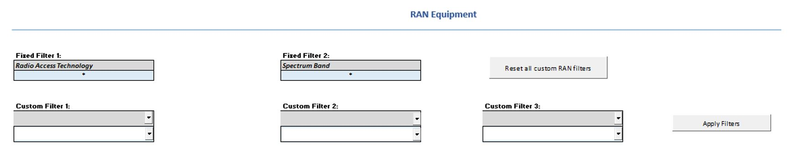
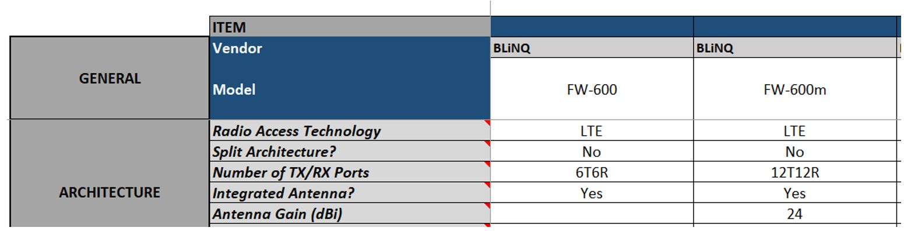
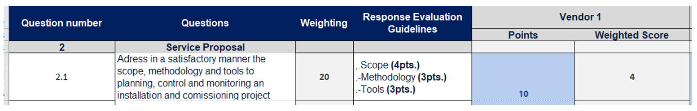
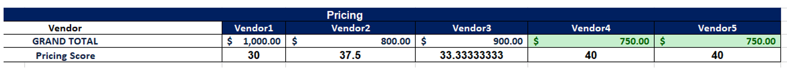

This section provides an overview of the
different RFx processes and general guidelines to select the most appropriate
to support your Journey. Furthermore, it describes the use of the different
templates to support you in the preparation phase of the RFx process.
Different RFx alternatives are possible
depending on the main scope and required outcome of the process. The following
subsections provide a description of each of these alternatives and the tools
that support their development. In addition, in the following sections, you
will find the general guidelines to select the most appropriate one for your
specific case.
6.2.1
Executing an RFI for fixed wireless access solutions
An RFI is an appropriate selection when you
need to obtain general information from vendors. You can use an RFI process
after completing steps 3, 4, or 5 of your Journey when you need to get specific
information regarding capabilities and budgetary pricing of products and
services that will be required to deploy your Network.
The main advantage of the RFI is its
simplicity, being easy to prepare and fast to respond. In addition, the
vendors' responses can also inform you to generate more concrete questions for
an eventual RFP/RFQ. Finally, an RFI does not imply a commitment to purchase,
and the request is limited to budgetary pricing and a description of the
vendor's capabilities or solutions.
 Use the RFI for FWA Solutions Template to create the RFI document
Use the RFI for FWA Solutions Template to create the RFI document
To create a complete document including all
the relevant information for your RFI initiative, follow the instructions
below:
1. Define the scope of the RFI
By using the RFI for
fixed access solution template, you will be able to collect
information and budgetary estimates regarding the following products and
services:
- Network Equipment (CPEs,
RAN, Backhaul, Core, IT hardware)
- Network Systems (Billing,
Ticketing, Network Management Systems)
- Site Surveys Execution
- Low-Level Network Design
Development
- Network Deployment Services
(Installation & Commissioning)
The provided template is already pre-filled
with the required information for your RFI document. However, you can adapt the
content to further customize it according to your necessities.
2. Define who will be the recipient of
the document.
Due to its nature, the RFI must be
addressed to vendors and system integrators that can cover at
least one of the categories defined in step 1. In this way, you can understand
the vendor ecosystem and reduce the vendor list only considering those that
comply with the requirements.
To identify possible candidates to be
participants in your RFI process, follow the guidelines below:
- For vendors, identify the Tech
Solutions Matrix vendors that offer equipment
similar to your necessities and search for a local distributor. In some cases,
you can find a local reseller that can offer better prices for small-volume
purchases.
- For system integrators,
search for system integrators with proven experience in successful projects in
areas close to your tribal land. It is recommendable to check the references
they provide and to find their expertise in the RFI scope.
3. Collect the
required inputs.
Depending on the initiative step, you will
require to include part of the following inputs in the document. Follow the
instructions below to fill the RFI template.
|
Input
|
Description
|
Playbook Support
|
|
Coverage Target
|
Indicates the
area where you will be offering the broadband service.
|
Defined in
"Step 1: Perform market and coverage analysis"
|
|
Existing network infrastructure data (Optional)
|
Describe the
infrastructure assets that can be used to deploy the network equipment.
|
Generated in
"Step 3: Assess key resources" using the Data Collection Kit
|
|
Network architecture (Optional)
|
Defines the
type of architecture and technologies to be considered in the network.
|
Generated in
"Step 4: Establish the Network architecture" using the Network
Architecture Wizard
|
|
Network design (Optional)
|
Defines the
technology solutions to be implemented on each of the network sites that are
part of the network
|
Generated in
"Step 5: Develop preliminary network design"
|
Table 6.1 - Guidelines to fill required inputs in RFI for FWA
services template
4. Follow the template's instructions to
fill the rest of the document.
To fill the rest of the RFI document,
follow the indications that are provided throughout the template. These are
notes and instructions that you can easily identify as they are supplied in red
text. Once you have entirely customized the RFI template, do not forget to
remove all the indications and notes.
Step 5: Continue with the Execution
Phase of the RFI process.
6.2.2
Executing an RFP for consulting services
This RFP addresses the case when a Tribal
Land decides to seek support and guidance to manage their FWA network
evaluation, selection, and implementation process. Some of the drivers to
pursue this path are the following:
- The Tribal Land team lacks
resources with technical background
- The timelines to deploy the
network are tight
- The Tribal Land has a large
area which potentially requires the deployment of more than ten sites
- The Tribal Land coverage
targets are situated in a challenging or extreme terrain
This process can be executed once you have
completed steps 1 and 2 when you have defined your business plan's foundations:
definition of coverage targets and service requirements. Finally, this option
is appropriate when you're ready to procure and engage with consulting
services, which means you have a budget available.
 Use the RFP for consulting services template to create the RFP document
Use the RFP for consulting services template to create the RFP document
To create a complete document including all
the relevant information for your RFP initiative for consulting services,
follow the instructions below:
1. Define the scope of the RFP
By using the RFP for
consulting services template, you will be able to request specific
information for the following services:
- Area survey, site surveys
& infrastructure assessment (in case that the Tribal Land has not performed
the network data collection process)
-
High-level network design
-
RFP management for equipment
procurement, engineering, and deployment services
-
Low-level network design to
validate designs from vendor equipment
-
Vendor management through
equipment procurement, delivery, and installation & commissioning process
-
Site acceptance procedures
The provided template is already pre-filled
with the required information for your RFP document. However, you can adapt the
content to further customize it according to your necessities.
2. Define who will be the recipient of
the document.
This RFP should be targeted to engineering
and independent consultants that can cover at least one of the categories
defined in Step 1. In this way, you can understand the service provider
ecosystem and reduce the candidate list by only considering those that comply
with the requirements.
To identify possible candidates to be
participants in your RFP process, follow the guidelines below:
- For engineering and
independent consultants, search for consultants with proven experience in
successful projects in areas close to your tribal land. It is recommendable to
check the references they provide and to find their expertise in the RFP scope.
3. Collect the required inputs.
Depending on the initiative step, you will
require to include part of the following inputs in the document. Follow the
instructions below to fill the RFP template.
|
Input
|
Description
|
Playbook Support
|
|
Coverage Target
|
Indicates the
area where you will be offering the broadband service.
|
Defined in
"Step 1: Perform market and coverage analysis"
|
|
Existing network infrastructure data (Optional)
|
Describe the
infrastructure assets that can be used to deploy the network equipment.
|
Generated in
"Step 3: Assess key resources" using the Data Collection Kit
|
|
Network architecture (Optional)
|
Defines the
type of architecture and technologies to be considered in the network.
|
Generated in
"Step 4: Establish the Network architecture" using the Network
Architecture Wizard
|
Table 6.2 - Guidelines to fill required inputs in RFP for
consulting services template
4. Follow the template's instructions to
fill the rest of the document.
To fill the rest of the RFP document,
follow the indications that are provided throughout the template. These are
notes and instructions that you can easily identify as they are supplied in red
color text. Once you have entirely customized the RFP template, do not forget
to remove all the indications and notes.
5. Continue with the Execution Phase of
the RFP process.
6.2.3
Executing an RFP for network equipment &
implementation services
This RFP option is appropriate when you're
ready to procure equipment and network implementation services, which means
that you have budget available and that you have at least completed step 3 in
the Journey.
Use the RFP for network equipment & implementation services template to create the RFP document
To create a complete document including all
the relevant information for your RFP initiative for network equipment and
implementation services, follow the instructions below:
1. Define the scope of the RFP
By using the RFP
for network equipment & implementation services template, you
will be able to search for vendors to provide the following products and
services:
- Network equipment (CPEs, RAN
base stations, backhaul, core and IT hardware)
-
Network systems (billing,
ticketing, network management systems)
-
Site surveys for existing
and potential network sites.
-
Low-level network design
-
Network deployment
(installation & commissioning)
The provided template is already pre-filled
with the required information for your RFP document. However, you can adapt the
content to further customize it according to your necessities.
2. Define who will be the recipient of
the document. .
This RFP should be addressed to original
equipment manufacturers (OEMs), system integrators, and value-added resellers
that may provide one or more of the points defined in Step 1. In this way, the
Tribal Land can assess and select the set of vendors that best suit their
requirements.
To identify possible candidates to be
participants in your RFP process, follow the guidelines below:
- For OEMs, identify the Tech
Solutions Matrix vendors
that offer equipment similar to your necessities and search for a local
distributor. In some cases, you can find a local reseller that can offer better
prices for small-volume purchases.
- For system integrators,
search for system integrators with proven experience in successful projects in
areas close to your tribal land. It is recommendable to check the references
they provide and to find their expertise in the RFI scope.
- For value-added resellers,
look for a provider that offers equipment according to your necessities and
covers your tribal land. Some examples of this type of providers can be found here and here.
3. Collect the required inputs.
Depending on the initiative step, you will
require to include part of the following inputs in the document. Follow the
instructions below to fill the RFP template.
|
Input
|
Description
|
Playbook Support
|
|
Coverage Target
|
Indicates the
area where you will be offering the broadband service.
|
Defined in
"Step 1: Perform market and coverage analysis"
|
|
Existing network infrastructure data
|
Describe the
infrastructure assets that can be used to deploy the network equipment.
|
Generated in
"Step 3: Assess key resources" using the Data Collection Kit
|
|
Network architecture (Optional)
|
Defines the
type of architecture and technologies to be considered in the network.
|
Generated in
"Step 4: Establish the Network architecture" using the Network
Architecture Wizard
|
|
Equipment technical requirements (Optional)
|
Define the
technical specifications for network equipment to be used in the network.
|
Generated in
"Step 4: Establish the Network architecture" using the Network
Architecture Wizard
|
|
Network design (Optional)
|
Defines the
technology solutions to be implemented on each of the network sites that are
part of the Network
|
Generated in
"Step 5: Develop preliminary network design"
|
Table 6.3 - Guidelines to fill required inputs in RFP for
network equipment and implementation services template
4. Follow the template's instructions to
fill the rest of the document.
To fill the rest of the RFP document,
follow the indications that are provided throughout the template. These are
notes and instructions that you can easily identify as they are supplied in red
color text. Once you have entirely customized the RFP template, do not forget
to remove all the indications and notes.
5. Continue with the Execution Phase of
the RFP process.
6.2.4
Executing an RFQ
The request for quotation (RFQ) process
must be considered when you have obtained or developed a preliminary network
design and need specific pricing data to trigger the purchase orders.
At this point, you already know the
equipment technical specifications or even the specific vendor and model.
Therefore, the RFQ only considers a reduced set of equipment vendors to be
participants. This set of vendors can result from analyzing the RFI responses
or via the Tech
Solutions Matrix, a useful repository with preselected vendors for FWA
networks.
Furthermore, an RFQ should be considered
only when a budget to procure the associated equipment has been secured.
 Use the RFQ template to create the RFQ document
Use the RFQ template to create the RFQ document
To create a complete document including all
the relevant information for your RFQ initiative, follow the instructions
below:
1. Define the scope of the RFQ
By using the RFQ
template, you will be able to obtain specific pricing data to
trigger the purchase orders for:
- Base stations
- CPEs
- Backhaul equipment
- Core equipment
- Network Systems
The provided template is already pre-filled
with the required information for your RFQ document. However, you can adapt the
content to further customize it according to your necessities.
2. Define who will be the recipient of
the document.
The RFQ should be addressed to system
integrators, original equipment manufacturers (OEMs), and value-added resellers
that can cover the scope defined in Step 1.
To identify possible candidates to be
participants in your RFP process, follow the guidelines below:
- For OEMs, identify the Tech
Solutions Matrix vendors that offer equipment
similar to your necessities and search for a local distributor. In some cases,
you can find a local reseller that can offer better prices for small-volume
purchases.
- For system integrators,
search for system integrators with proven experience in successful projects in
areas close to your tribal land. It is recommendable to check the references
they provide and to find their expertise in the RFI scope.
- For value-added resellers,
look for a provider that offers equipment according to your necessities and
covers your tribal land. Some examples of this type of providers can be found here and here.
To
further help you identify the network equipment vendors for FWA products, this
playbook provides the Tech
Solutions Matrix, which is a useful repository with preselected vendors for
FWA networks. Details on the use of the Tech Solution Matrix is provided in the
following subsection.
3. Collect the
required inputs.
Before preparing the RFQ, it is necessary
to collect the equipment's technical requirements, which will determine the
specific models that will be part of your FWA network. Follow the instructions
below to fill the RFQ template.
|
Input
|
Description
|
Playbook Support
|
|
Equipment technical requirements
|
Define the
technical specifications for network equipment to be used in the network.
|
Generated in
"Step 4: Establish the Network architecture" using the Network
Architecture Wizard
|
|
Equipment Bill of Quantities
|
Include the
required number of equipment for each technology.
|
Generated in
"Step 5: Develop preliminary network design"
|
Table 6.4 - Guidelines to fill required inputs in RFQ template
4. Follow the template's instructions to
fill the rest of the document.
To fill the rest of the RFQ document,
follow the indications that are provided throughout the template. These are
notes and instructions that you can easily identify as they are supplied in red
color text. Once you have entirely customize the RFQ template, do not forget to
remove all the indications and notes.
5. Continue with the Execution Phase of
the RFQ process.
 Use the Tech Solution Matrix to support the RFQ process
Use the Tech Solution Matrix to support the RFQ process
The Tech
Solutions Matrix is a repository in the form of a spreadsheet that contains
products from different vendors that comply with common technical specifications
required in a FWA network. The information is organized in the following
categories.
- RAN Base Station (BS)
- Customer premises equipment
(CPE) & home routers
- Transport/backhaul equipment
- Core/aggregation
- Operational
support system (OSS) and business support system (BSS)
Follow the steps below to search for
network equipment/vendors that meet your technical specifications:
1. In the Tech
Solutions Matrix spreadsheet, identify the Dashboard
sheet, as shown in Figure 6.2. This dashboard allows you to filter and compare
equipment of the categories mentioned above.

Figure 6.2 — Dashboard sheet in the Tech
solution Matrix
2. Identify
the category section of your interest, as displayed in Figure 6.3. You can find
a specific section from all the defined categories.

Figure 6.3 — RAN equipment section from
dashboard sheet
3. In this
specific section, you can find the different filters that can be applied in
your search. The Fixed Filters correspond to the most relevant equipment
characteristics. In addition, you can further customize your search with the Custom
Filters.

Figure 6.4 — Example of a fixed filter for RAN equipment section
4.
After selecting the filters of
your interest, click the Apply Filters Button to obtain your search
results. The result will show a list of equipment that matches with the
selected filters. You can use this information to compare the equipment from
different vendors, as shown in Figure 6.5.

Figure 6.5 — Result of the Tech solution
matrix repository
After receiving the submissions from
different vendors/consultants, you need to perform an evaluation process to
select one or more vendors for final negotiations. This playbook provides a Vendor
Evaluation Tool that you can use to perform the evaluation process.
Due to the different nature of the RFx
processes, two versions of the tool are available:
 Evaluation
tool for consultancy services:
Evaluation
tool for consultancy services:
Used to evaluate
the RFP process responses addressed to consulting services, as described in
section 6.2.2.
Evaluation
tool for vendor equipment:
Used to evaluate
responses from an RFP process addressed to network equipment and implementation
services, as described in section 6.2.3.
To perform the evaluation process using the
evaluation tool, follow the steps below. This process applies to both versions
of the evaluation tool.
1. Evaluate the general
vendor/consultant characteristics using the criteria evaluation table
The criteria evaluation table is used to
evaluate each vendor according to different predefined questions divided into
various categories with a specific table for each category. Figure 6.6 shows a
sample of the criteria evaluation table.

Figure 6.6 — Criteria Evaluation Table
The information included in this table is:
- Question number: It is a reference number for the questions to
be evaluated
-
Questions: Predefined questions to evaluate the different
aspects of the vendor/consultant.
-
User weight: It is a weight assigned by the user for each
question. You can set the criteria with a scale of your preference. The higher
the weight, the higher the criteria relevance.
-
Response evaluation
guideline: It is a reference
method to evaluate the related question with points/scores.
-
Points: Are the user's points to the vendor's response
included in the proposal. These points are assigned using as a reference the
response evaluation guidelines.
-
Weighted score: Calculated score for each question, taking as a
reference the user weight, assigned points, and overall weight of each
criteria.
2. Evaluate pricing using the Pricing
Table
The pricing table is used to evaluate the
overall pricing of each consultant. Figure 6.7 displays a sample of the
criteria evaluation table.

Figure 6.7 — Consultant Pricing Table
The information
included in this table is:
- Grand total (Input from the user): Total cost/charge of
each consultant for all the products and services provided.
- Pricing score: The pricing score is a relation of the actual
cost of provided by each vendor compared to the lowest price of all evaluated
participants. It provides a reference for the incremental cost of each
proposal.
3. Consult the results in the Evaluation
Summary Table
The evaluation summary table shows each
vendor/consultant's overall scores according to the different evaluated
criteria. The summary in Figure 6.8 shows five different consultant scores.

Figure 6.8 — Evaluation summary of
consultancy services
The information included in this table is:
- Criteria: Factors that will be evaluated to select a
vendor/consultant.
- Weighting criteria: You should adjust the overall weight of each
criteria to be evaluated. These values are percentages and should add 100%. The
weight for each criteria represents the relevance that you want to give it; the
higher the number, the higher the relevancy.
- Total score: This is the result of the evaluation of each
criteria. It represents the overall capability of each consultant to fulfill
the scope.
4. Select the RFx winner based on the
total score from the evaluation results